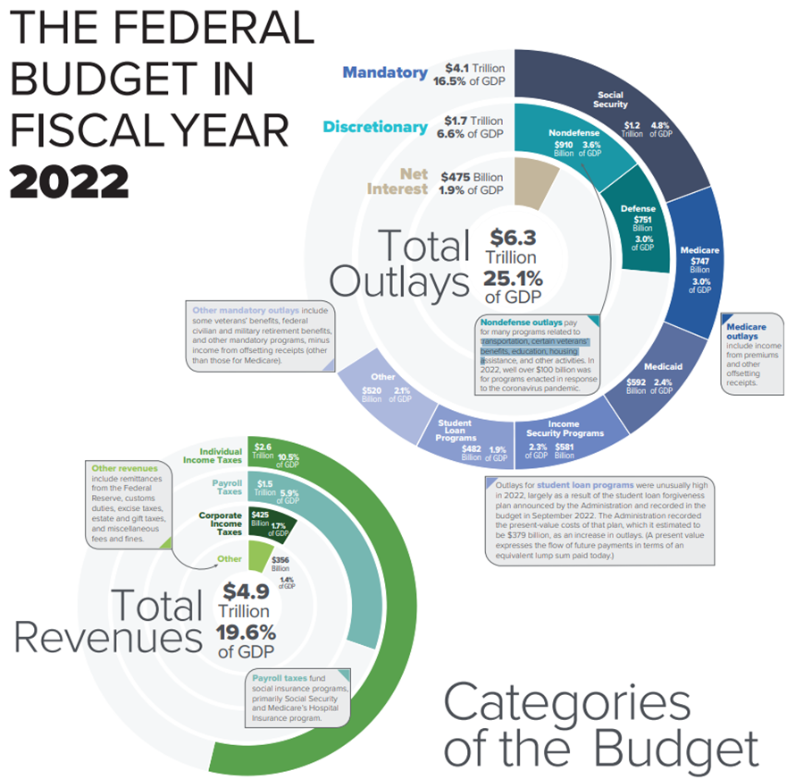
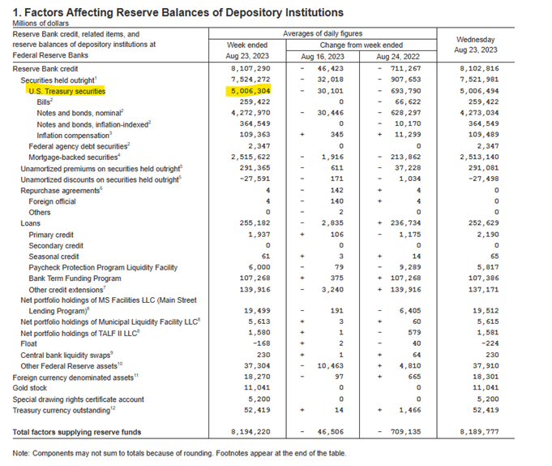

Bonds: Not a Store of Value
The thesis of this article is that US Government Issued Bonds* will be a poor store of value over the coming decade. They pose limited upside potential with an asymmetric downside potential. In other words, I believe they are an overly risky asset to hold long term.
In this article I will first describe the nature of bonds (in general) along with their inherent potential risks. Then I will present some facts about the United States Governments' financial situation, highlight the unsustainability/mismanagement of the system, describe a few details on how government finances are different than personal and business finances, discuss money printing and finally, based on the data, draw the conclusion that the US must choose between exponentially inflating the money supply and defaulting on their debt. Lastly, I will offer my opinions on how I believe bonds should be considered a cash equivalent inside a portfolio.
*I am analyzing US issued bonds in this article for a few reasons: 1. For the sake of a concise argument since there are many entities issuing various types of bonds. 2. US issued bonds (along with other large country's debt) are the backbone of the global financial system. Sovereign states, large corporations, banks, insurance companies, pension funds, retirement accounts 401ks etc.. They all have long term wealth preservation strategies based on US bonds as a large piece of their holdings. 3) Most importantly, US issued bonds are considered to be one of the safest in the world so might as well scrutinize the "best" as a way to steelman the agreement for the asset class as a whole.
Define
Bonds: Properties and Risks
Let's start with the basics and define bonds: What is a bond? Bonds are contracts. When you buy a bond from an issuer you are essentially lending them money. In return they promise to pay the money back at a certain date plus a predetermined amount of interest, usually paid monthly, quarterly, or yearly. That is where the term "fixed income" comes from, because they pay known amounts regularly.
Bonds can come with many different terms that describe the conditions of the contract: interest rate, duration, collateral, however, when talking about US issued bonds there are some constants. The duration can be anywhere between 1 month to 30 years, each duration can have a differing interest rate, and there is no real collateral. No assets to back up the debt in case of default. Just "the full credit and faith of the US government".
Bonds also act as an asset like stocks. Once a bond is created, the holder can sell it to someone else. The price of the bond can vary based on market conditions.
Three Main Risks
1) Default Risk
The first risk might be apparent: What if the bond issuer doesn't pay you back? Clearly this would make for a bad investment because not only is your income (interest payments) gone but your principal investment will be significantly devalued. In the business world, to mitigate this risk, many bonds will be secured by real assets that could be seized by the lender in case of default. The lender can also look at the "creditworthiness" of the borrower by looking at their income, expenses, and current debt levels.
For example, think about when someone takes a mortgage out to purchase a house. The borrower is effectively issuing a bond to the bank. But notice how the bank is very interested in making sure that the bond is secured by the real estate being purchased in addition to making sure that the borrower has good credit and reasonably low debt to income ratios. The bank is mitigating the loans default risk.
2) Inflation Risk
The second risk to bonds can be called a couple of things: duration risk, inflation risk, currency risk. Regardless of nomenclature, the idea is that once you lock up money at a fixed rate, unforeseen higher inflation could turn the investment into a poor one, despite the appearance of a nominal yield. If inflation is 6% and you're holding a 2% yielding bond, it doesn't take advanced math skills to determine that you are losing money. In comparison, assets like stocks, real estate, monetary metals, and other hard assets tend to "float" on top of inflation. Bonds do not. They are fixed at a specific principal dollar amount and a specific interest rate. To mitigate this type of risk, it is typical to have higher interest payments for longer duration bonds, whereas short duration bonds (one year, 3 month) typically have lower interest because they are less susceptible to this duration risk. However, in an inflationary scenario it may be hard for the long-term bond holder to even realize that they are losing purchasing power until it is too late because the nominal amount of the bond and interest stays the same and the slow creep of prices over the years is harder to recognize. It's like the analogy of boiling a frog. It never jumps out because the water is heating slow enough that it doesn't realize its peril.
For example, if Tracy lends Sara money and agrees to a 5% interest rate over a 10-year period. And inflation happened to be 10% on average over those years. Tracy is effectively losing 5% purchasing power per year despite the appearance of a nominal 5% gain.
3) Interest Rate Risk
The third risk is interest rate risk. Typically, bonds tend to move inversely to the change in the market interest rate. When interest rates increase the value of existing bonds tends to decrease and when interest rates decrease the value of the existing bonds increases.
For example, if Katie lends Lucy $100 for 10 years with a yearly interest of 5%. Lucy issued a bond to Katie. In exchange, Katie now has a contract that specifies the details of the bond. So, Katie can turn around and find a buyer for that contract at any point in time. If the current market interest rate is about 5% then it is likely that Katie could sell the bond for what she paid for it: $100. However, Lucy barrows a lot of money and is now issuing bonds to others with a 10% interest rate. Suddenly Katie can't sell her bond for $100 anymore because everyone would prefer the 10% yield over the 5%, so Katie will have to lower the price of her bond to find a buyer.
United States Financial Overview
Based on the risks discussed above, it seems important to dive into the United States creditworthiness. Let us explore some relevant facts regarding the US governments financial situation and behavior such as income/expenses and debt levels.
Income and Expenses
In 2022, the US collected $4.9 Trillion in tax revenue (let's say this is income) and spent a total of $6.3 trillion. A deficit of $1.4 Trillion. The figure below shows the revenues and outlays in 2022.

Budget
Infographics - Overview (cbo.gov)
2022 wasn't just a bad year. The
two charts below show the history of our deficits. The first one is percent of GDP
and the second one is the yearly deficit in dollars. Running a deficit is very
much a habit for the US government.
Budget
Infographics - Overview (cbo.gov)
The Bondholder's Burning Platform - by Jesse Myers (onceinaspecies.com)
In the context of assessing the risk of bonds, showing a 50+ year record having negative income is not reassuring. They are promising to pay a bond holder back with interest, but with what income? Whenever there is a deficit, the government must borrow that amount of money (which means creating more bonds and selling them) to pay their expenses. This adds to the overall debt which means higher interest expenses the next year which (if not kept manageable) could contribute to a greater deficit the next year which... Can lead into a self-enforcing trap. (This topic will be covered in more detail in the section titled: Debt Spiral).
This behavior wouldn't work for the average citizen or small business. We can't spend more than we make every year and just open a new credit card to offset the difference. Well, actually we could. We could do that until no one would offer us credit, at which point economic reality sets in.
The numbers are concerning. In 2022 the US gov spent 28.6% more than we made. That is equivalent to a person or business making $100K in a year and spending $128.5k the same year. It is easy to imagine the situation quickly getting out of control if it continued to happen year after year and they were using more debt to fund the difference. You can imagine one would build up quiet a bit of debt.
US Debt
The US National Debt is the accumulation of all active bonds they have issued. This is referred to as public debt or US National Debt. Below is a snapshot of the US debt as of August 15th, 2023: $32.7 Trillion
U.S. National Debt Clock
: Real Time (usdebtclock.org)
For fun and more context (and also because this article took me so long to
write this article) here is the US Debt Clock on November 13th,
2023: $33.7 Trillion. The national debt is up more than 1 trillion in three
months. That is more than the entire defense budget in 2022!

U.S. National Debt Clock
: Real Time (usdebtclock.org)
The graph below shows the trend of US debt since 1960. Notice the exponential trend. It is also important to note that this graph only goes up. It suggests that the US does not or cannot pay down the debt. You would hope that a responsible financial institution (the most credit worth institution in the world) would be able to manage its debt appropriately. Not struggling to pay the interest expense as the debt expands exponentially.
Federal Debt: Total Public Debt (GFDEBTN) | FRED | St. Louis Fed (stlouisfed.org)
And here is graph showing the US
debt as a percent of GDP. This shows that our debt is growing faster than the
underlining economy. It is a common point of view (in some camps) that increasing
debt and prices stimulate the economy and is necessary for growth. This graph
shows the debt load of the US out paces the US GDP growth.
Now just in case you were feeling optimistic and sure that we could find a way out of this mess, here is a graph of the projected debt to GDP over the next 25 years published by the Congressional Budget Office. Clearly there is no plan to stop accelerating our debt growth. Let alone keeping it where it is. Decreasing the debt isn't even in the discussion and in fact the red dot is a more accurate representation of where we are today (Sept 26, 2023) around 120% debt/GDP (based on the most recent figure above).
Budget
Infographics - Overview (cbo.gov)
This is an astonishing amount of debt. Let's make it simple and say that in 2022 the US debt is $33 Trillion. And we saw in the section titled "Income and Expenses" that the tax income was $4.9 Trillion. This is akin to a person or a business making $100k per year and having over $670k in personal loans. I think we can all agree that is not a great situation for the average Joe or any business.
Also, think about this information from a very simple supply and demand perspective. It is very clear that the number of US issued bonds in existence is accelerating rapidly with no signs of reversing course. Usually, when there is an over abundance of a certain thing, that thing will lose value in a marketplace.
The Debt Spiral
It is common financial literacy to understand the dangers of taking on too much debt and many everyday people know the dangers of credit card traps all too well.
As briefly mentioned in the "Income and Expense" section, there is a problem with continually taking on more debt each year. The issue is that there is an interest expense associated with that debt. As more debt gets added, the interest expense increases. Increased interest expense leads to a larger deficit which leads to more debt which leads to larger interest expense. You can see there is a self-reinforcing cycle at play. But is this happening in the US?
The graph below shows the Federal Government's interest expenses. Another exponential trend in the wrong direction.
This graph shows the interest expenses sharply increasing over the last year or so. It looks like the current interest expense is about $900 Billion, more than the defense expense of 2022. Everyone is welcome to draw their own conclusions, but this trend does not strike me as very sustainable. Where does the debt spiral end? And how does the interest get paid? Maybe it is manageable right now but by the very nature of how it is being "managed" means that the problem will continue to get worse at an exponential rate. Right now, the interest expense is about 14% of 2022 tax receipts. What happens when it gets to 50%. Could it exceed 100%?
This graphic provides a useful visualization to explain a debt spiral:
What's a Debt Spiral, and is the US already in one? (substack.com)
When Does the Debt Actually Get Repaid?
This is a reasonable question. The debt that the US sells does have a maturity date that can range from one month to 30 years. But as we saw in the federal budget shown in an earlier section, there are no recorded yearly expenses that go to repaying debt principal amount. You can also see in the graph of "Total Public Debt" that the US debt never actually goes down, only up.
The principle of maturing debt is getting repaid, but not with real life current dollars. It is getting repaid with more debt.
Observe the chart below taken from a St. Louis Federal Reserve publication titled "Assessing the Cost of Rolling Over Government Debt". The colors and numbers found on the key correspond to debt maturity in years. Yellow represents a bond that has a 5-year maturity, for example. The numbers at the top of the of each bar (and on the Y-axis) represent the percentage of the total national debt. This specific article quotes that figure at $31.4 Trillion, which is now outdated.
Assessing the Costs of Rolling Over Government Debt | St. Louis Fed (stlouisfed.org)
This chart shows that 30% of the debt, or about $9 Trillion of debt principle payments are due in 2023. Of course, this is far too much to pay and the only way the government can pay back the debt is to create more debt to replace the old. Also note that a large portion of the 2023 debt is one-year bonds. Those will be replaced with new one-year bonds that will appear in 2024's bar as they roll over. Bottom line, there will always be a massive amount of debt due and without continuous access to more credit there is no way to pay the debt.
Think about it. If you own a US bond that is about to mature, you are very likely to receive the principle, but just know that the principle only exists because there is a new investor willing to lend money. The "first investors" are being paid with "money invested by later investors."
Food for thought:
The False Bond Market
The facts show that the US is a massive barrower. They create bonds and sell them as a way of borrowing money. Not a controversial statement.
I would make the argument that in a fair market, an entity should be able to sell their debt to rational market actors at fair market value. There is nothing wrong with that, in my opinion. In fact, access to credit is a good way to increase a society's productivity (many will argue). Yes, this can result in booms and busts as credit is created and destroyed, but it is also a great way for money to get allocated to entities with plans for productive projects.
While all forms of credit creation could be considered money creation (a debate/discussion for another time) it is not a problem when two economic actors mutually agree to make a deal. The lender uses their own savings, they are aware of the potential risks, weigh the odds, and are willing to accept the risk/reward profile. The borrower has done their research and is confident that they will be able to use the capital in a way that will produce an excess of what it costs to repay the loan and interest. The key part here is that both players have real skin in the game and would face real consequences if things don't go their way.
All credit creation can technically be considered an expansion of the monetary supply, however, when the loan is repaid or defaulted on (aka restructured), the money has effectively been removed from the system. In our current system the credit never gets removed, resulting in permanent and exponential expansion of the monetary supply.
The US government is not subject to these economic rules that hold true for the everyday citizen or business. As we saw in the section above, loans never really get paid back and the money is never removed from the system. There is not a clear plan on how to use the loans to produce enough to pay them back. Mostly the loans go toward paying obligations. Lastly, there is not a genuine demand for the debt on a fair and open market. The US government creates artificial demand for their debt in a couple of ways.
1) Requiring certain institutions within the US such as Commercial Banks, Pension funds and Insurance Companies to hold a portion of their reserves in US issued debt.
2) Requiring global trade, especially oil, to be conducted in dollars. Which in turn makes it necessary for other Countries to have easy access to dollars so they hold US bonds on their balance sheet.
3) Using the Federal Reserve as buyer of last resort.
Much could be said on all these points, but for the sake of this article I will dive a bit deeper into point 3) and the other two points will have to be a discussion for another time.
The federal reserve has a completely unique privilege of being able to create dollars. It sounds unbelievable, but it is true that this institution can "push a button" and make new dollars with inputting zero work, energy or time. But don't take it from me, take it from Neel Kashkari, President of the Federal Reserve Bank of Minneapolis:
INFINITE Cash At The Fed - YouTube
First of all, if you do a basic economic reality check, when there is an infinite amount of something that usually implies that it is completely free (for example, oxygen) so this strongly suggest the dollar will continue to lose purchasing power. Secondly, his words give us a clue that the Federal Reserve is more than ready to create dollars to "secure the financial system". This has happened before, and there is a high probability that it will happen again.
The Federal Reserve is where the
proverbial "money printer" truly resides and where monetary debasement (also
called inflation) stems from. When the Federal Reserve creates dollars and
releases them into the economy there is subsequent devaluation in purchasing
power in existing dollars, wages, and dollar denominated debt (which includes
US issued debt we have been discussing).
The Federal Reserve uses its newly created money to "secure the financial system" by purchasing distressed assets from the entities in trouble, effectively bailing out the entity. In 2008 it purchased mortgage banked securities from the failing commercial banks, in 2020 it purchased US issued debt, and the spring of 2023 it rush in to purchase Treasuries from the failing banks: Silicon Valley, First Republic and more. You can see spikes at all three of these events in the graph below which shows the Federal Reserve balance sheet growth over the past two decades. This activity is one of the main reasons that the US has been able to exponentially expand its debt without defaulting. It shows there is currently about $8 Trillion worth of assets on the balance sheet.
And if we dig a bit deeper and look at the table below, we can see that they own about $5 Trillion worth of "US Treasury securities" aka the bonds we have been talking about.

Federal Reserve Balance Sheet: Factors Affecting Reserve Balances - H.4.1 - August 24, 2023
The fact that almost 15% of the entire supply of US issued debt was purchased and is currently held by the Federal Reserve is evidence that the value of the debt is propped up by the money creation.
Without the federal reserve intervention, it is likely that the US would have defaulted on their debt already. It is hard to emphasize the scope of that statement. US debt acts as the backbone of the global financial system as it replaced gold as the "store of value" asset once we went off the gold standard in 1971. If the US were to default on even a portion of their debt, it would basically crash the entire system as all the debt gets repriced at zero (or close to it). Sovereign wealth funds, pension funds, insurance companies, banks, and anyone who owned the debt would see the value of their assets disappear basically overnight. The financial system would grind to a halt, no one would be able to access their "money", supply chains would be disrupted, and rule of law would fray. The most valuable assets may become oil, food, clean water and other survival supplies. Also, severe geopolitical conflicts would arise since foreign countries like China and the middle east would still want to be paid back in some way. So, from this perspective, we are luck to have the Federal Reserve backstopping the insolvent system.
This is hyperbolic and I don't believe this is going to happen. But I say it to stress how devastating a US debt default would be for our society. The powers that be would not let that happen. Maybe not so much out of care for humanity but more because they care about retaining the power they currently have. So, they choose the other option: continue to expand the money supply and debase the currency.
We know that the amount of debt the US government must issue each year is growing exponentially and they need buyers for that debt. Based on the trends in the data presented in this article, it is easy to imagine a world where there are no real market participants willing to purchase the debt. That leaves two options for the government: 1) default on the interest payments (and other obligations) which would send the value of bonds close to zero and likely collapse the financial system, sending the world into chaos and conflict (not very likely scenario) 2) have the Federal Reserve purchase as many bonds as necessary to "secure the system" which leads to further inflation/monetary debasement, which leads to poor bond performance. I believe this scenario is not just likely but almost a certainty.
How to Think About Bonds (personal
opinion):
In my opinion, I believe bonds
should be categorized in a portfolio in the same bucket as dollars/cash. One
could call them "cash equivalents". In any portfolio, is it wise to hold a
portion of your assets in cash. Many people like to hold 3 months, 6 months or
1 year worth of expenses in cash as a way to ensure
they will be able to pay for their life baring a hyper inflationary period or
an acute currency devaluation. Even under those circumstances, it is likely
that the allocation is a relatively small portion of one's portfolio. Some
people will prefer to hold a larger percentage in cash if they believe other
assets like stocks and real estate are overvalued and will decrease in the near future. This provides them with buying
opportunities at great prices.
Regardless of allocation, I think
it is commonly accepted that cash allocations are never long term (more than 2
or 3 years) because it is completely obvious that the dollar will continue to
lose value over a long time period. We are now in an
era where bonds should be treated in a similar manner. If one has 20% of their
portfolio in cash, I see no reason why a percentage of that allocation
shouldn't be in interest bearing bonds or other cash equivalencies such as CDs
and money market funds. The bond market is still very liquid, and one can sell
the bonds for current day dollars very quickly.
However, this
being said, there is still no reason to have long term (10+ year) bonds
when short term bonds (1 year or less) yield the same interest. With short term
bonds one can let the bond mature and collect the principal and interest in
full, thus there is very little interest rate and duration risk.
Conclusion
We have looked at the US governments income, expenses, debt levels, and interest expenses. We have also discussed the idea of a debt spiral, when the debt gets repaid (if ever), the federal reserve, money printing and how the US bond market is artificially supported. I believe that these topics provide evidence that the trajectory of the US financial system is not sustainable or stable. I also believe that there is more than enough evidence to show how unattractive owning US issued bonds are at this point in time. The two ideas go hand in hand.
Based on the data presented in this article, it appears to be a fact that the US government must continue to issue bonds at an exponential rate in order to keep the financial system running. In simple terms, this puts the US in the situation where it needs to decide between defaulting on their debt causing a complete global financial collapse or high inflation. Between these two options, high inflation is almost a certainty. As we know, high inflation is one of the risks for fixed income assets like bonds over a long-term view.
In conclusion, based on the
financial data of the US pointing toward a likely currency devaluation or a
period of high inflation, US issued long term bonds (along with cash) should not
be considered reasonable long-term stores of value. They provide asymmetric
downside potential with a low upside potential. They are unsecured with any real assets, have
an exponentially increasing supply, and the issuing entity has trillion dollars
deficits each year.